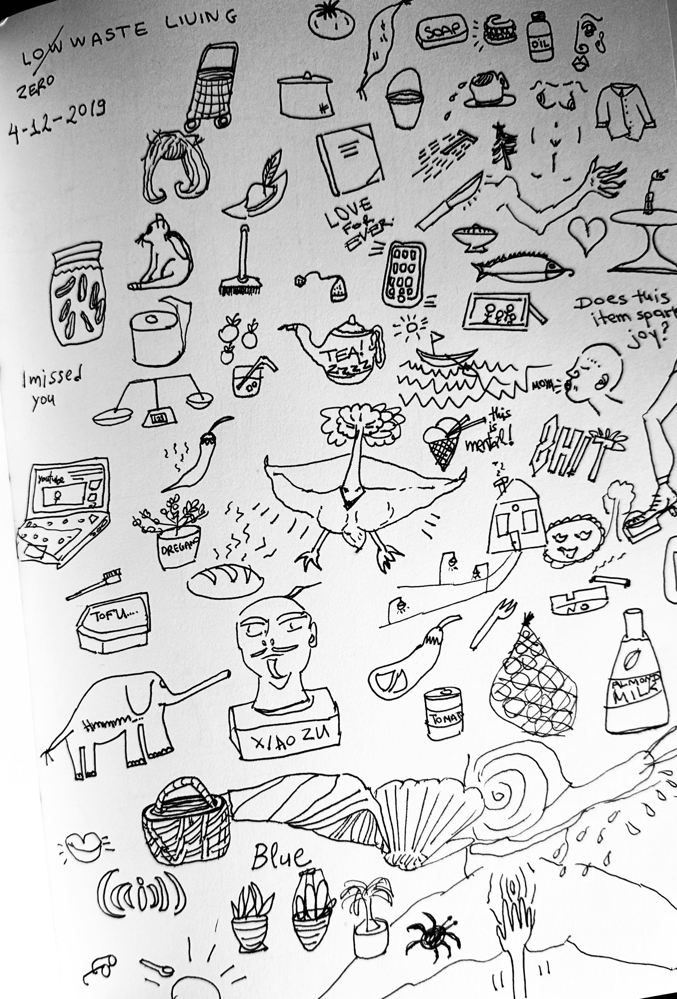
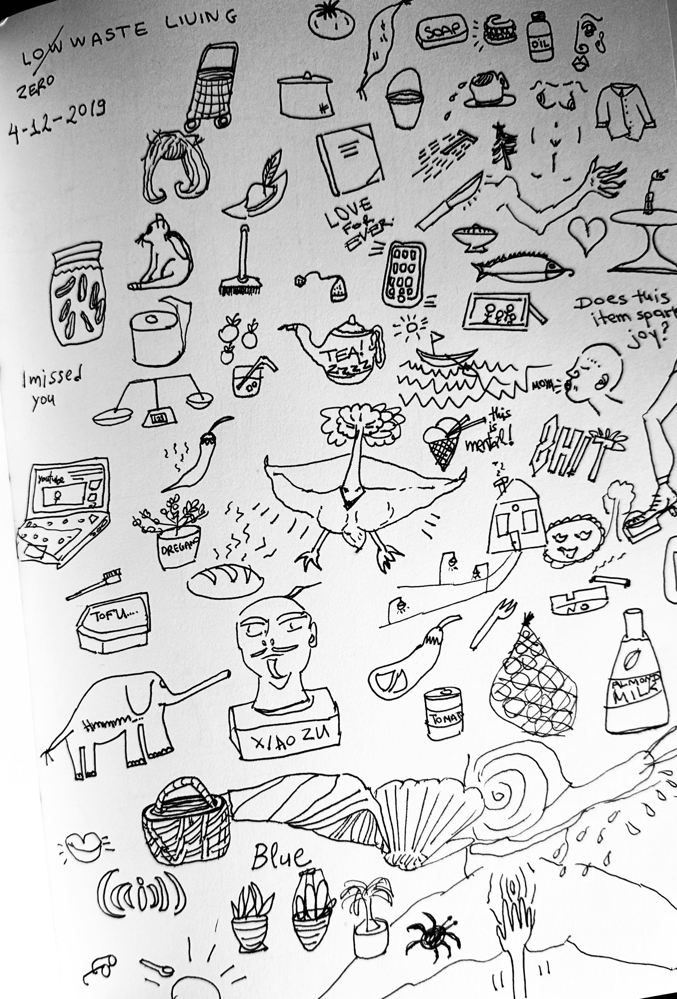
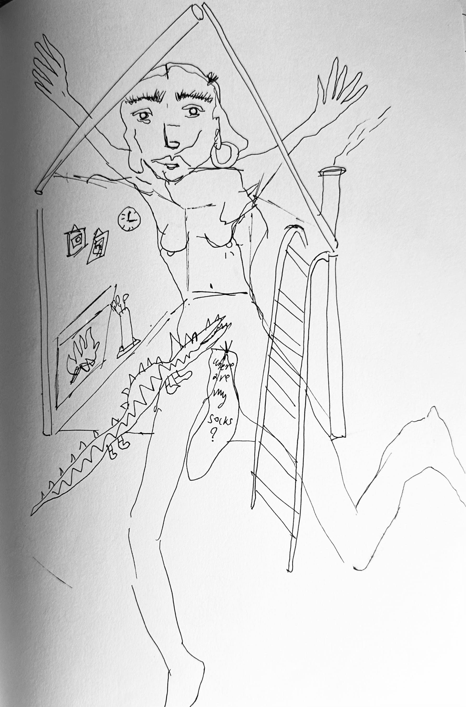
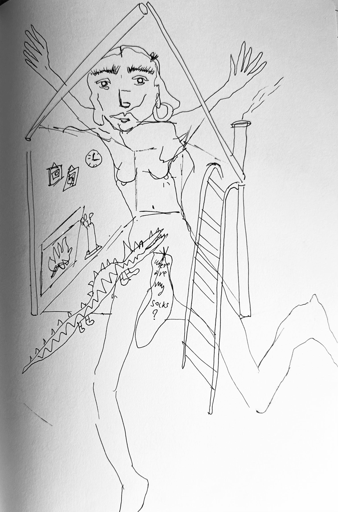

"PIY - Print it Yourself- Silk Screen Printing Labs Exhibition”


"PIY - Print it Yourself" - Silk Screen Printing Labs Exhibition, The Art Foundation Athens, Greece - June - July 2019.
PIY
Role/Contribution: Artist & Participant
Description: This exhibition presented my first line of silk screen printed t-shirts at The Art Foundation,
showcasing my exploration of textile design through printmaking techniques.
Process: I developed designs based on personal themes and experimented with
different printing techniques during workshops. Documentation included process photos and design iterations.
Outcome: The exhibition received positive feedback for its originality and craftsmanship.
It led to discussions about sustainable fashion practices in contemporary art.

 

 
